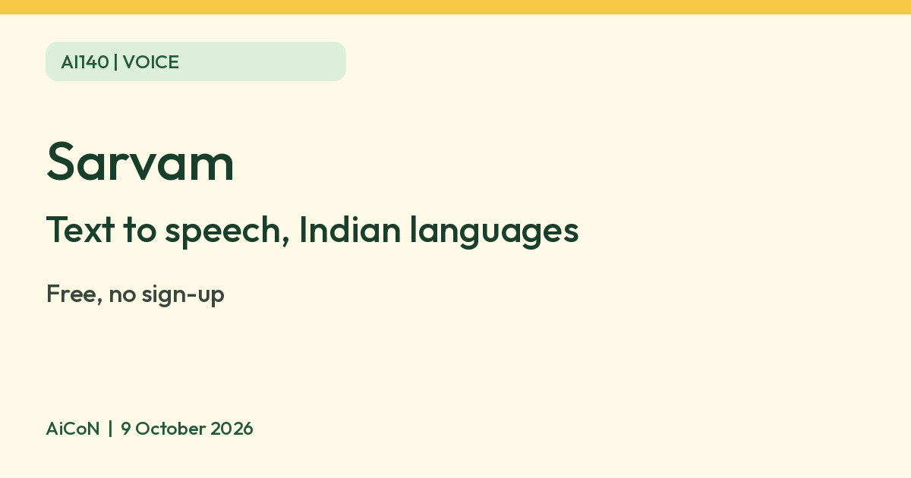

Sarvam: a free AI voice generator for Indian languages
The Sarvam website has a free text-to-speech tool for Indian languages. Sarvam says it needs no sign-up.

What it is
Sarvam is an Indian AI company. Its website has a text-to-speech page where you type or paste text, pick a voice and get spoken audio in Indian languages. Sarvam says the voices come from its Bulbul V3 model, and that it handles Hindi and English mixed in one sentence.
Is it free
Yes. Sarvam's page says the tool is free, with no account, no credit card and no trial expiry. The free tool takes up to 2,500 characters per generation. Sarvam sells a separate paid API for developers, which this post does not cover.
How to try it
- Open the Sarvam text-to-speech page.
- Type or paste your text, up to 2,500 characters.
- Pick a voice. Sarvam says there are 35+.
- Generate, listen, and download as MP3, WAV or FLAC.
Limits to know
- The page intro says Hindi, Tamil, Telugu and 10 more languages, while its FAQ lists 11: Hindi, Tamil, Telugu, Bengali, Malayalam, Marathi, Gujarati, Kannada, Punjabi, Odia and Assamese. Check the tool’s current language selector before relying on a language.
- Check the Sarvam terms before you use the audio for anything public or paid.
- Listen to names, numbers and places before you share the audio.
- Voice cloning is an enterprise feature that needs verification and consent, not part of the self-serve free tier. Use only your own voice or one you have clear permission to use.
- We did not test the tool ourselves.
Frequently asked questions
Do I need to sign up?
Not for the free tool, per Sarvam.
Does it work in Hinglish?
Sarvam says it handles Hindi and English mixed in one sentence.
Sources: Sarvam AI voice generator, Sarvam text to speech. Checked 9 October 2026.